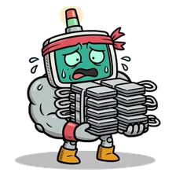
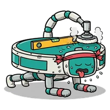

Lou Latency · CEO · his desk
Morning. I'm Lou. My fab is running late again, so I built it a twin.
This is my desk. My staff are Meta's models. Muse Spark Open answers your questions and writes my rules. Muse Wonder takes on anyone who thinks they can do my job. The simulator scores every change, and I sign.
My in-tray
Four problems I haven't solved. Fix one and hit the target. Muse Wonder will try too.
4 problems · a free build · up to 3 stars each
Take problem 1 →

1Rush hour on the spineEveryone wants the same track at nine.
2The gassed polisherShe's been on shift since Tuesday. 3Breakdown, no spareOne tool down and nobody on the bench. 4Lean or redundant?Cheap right up until something breaks.
Walk the floor with me
1,043 machines from the SMT2020 testbed, running live in your browser. A new day every visit, and none of them goes to plan.
Show me the floor →
Lou is a cartoon. His fab, and every fab here, starts from the SMT2020 testbed, a public research set of a chip fab's machines, routes and times (Kopp, Hassoun, Kalir, Mönch 2020). No real company's data is used.